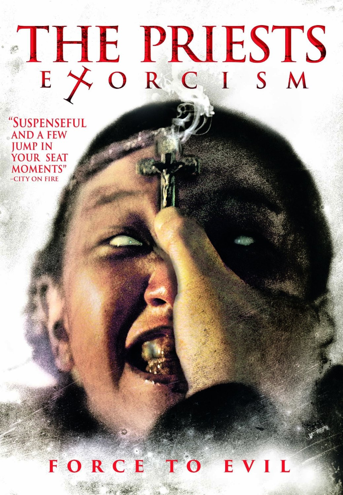

The Priests
Jang Jae-hyun
A young girl who belongs to Father Kim's parish becomes comatose after a hit-and-run accident. Father Kim finds out she is possessed by an evil spirit. Father Kim along with a rebellious young seminarian named Choi who is unsure about the spiritual warfare, tries to exorcise the demon and confine it in a piglet. Rosicrucianism informs Father Kim two of their priests was killed by this demon. Manifestations of the demon terrifies Choi and he runs out, but comes back to finish what they started with the determination. Father Kim tells him to believe this ministry isn't in vain and the reward is in the Lord’s hand (Isaiah 49:4). Choi replies to it by quoting Ezekiel 2:6, and affirms he is prepared now.
When they try to free her from the demon's powerful hold, they realize that the demon they are facing is an ancient one name Malphas and is far more dangerous than they ever thought. They confine it in the piglet, but the police arrive and tries to arrest them for killing Young-shin by complaint from extremely traumatized parents. Choi runs out with the pig, faces many obstructions but successfully drowns it in the river as instructed by Kim (Luke 8:33). Young-shin who was considered dead shows signs of life and Father Kim's and Brother Choi's rashes disappears.
The Korean version